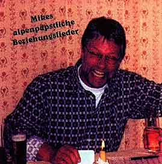

Mike's alpenpäpstliche Beziehungslieder

Die besten Songs des Alpenpapstes - entstanden an kalten Tagen bei warmem Punsch - sind absolut 100% original!
Ihr könnt sie hier herunterladen. Zum Hören braucht ihr lediglich einen Media-Player, der MP3-Lieder abspielen kann (z.B. winamp).
Mikes' Alpenpapst-Songs
- 01 - Ansage
- 02 - Ich steh im Schnee
- 03 - Ansage 2001
- 04 - Auf der Autobahn
- 05 - Ich bin wieder hier
- 06 - Danke schön
- 07 - Ansage 2002
- 08 - Quando
- 09 - Willenlos